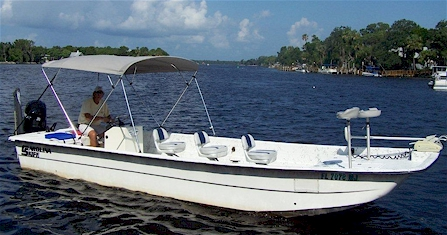
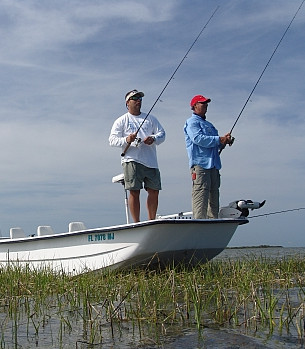

Fishing
Fishing Rates & Times
Let’s go flats fishing for trout, redfish & assorted game fish!
Vessel fishing license is provided for you.
The Fish We Catch
World-class tarpon fishing! Homosassa is considered an angler’s paradise with many different types of saltwater fish that can be caught year-round. There is a healthy fishery of both spotted seatrout and redfish. These two species are what most folks fish frequently for in Homosassa.
Pelagic species such as Spanish mackerel and bluefish sweeten the pot during the Spring and Fall migrations. Rock piles full of gag grouper, grunts, and sea bass dot the gulf’s bottom, providing fun for all ages (and meat to take home). I like to match the rod to the fish, using light spinning tackle or bait-casting gear for the most fun.
There are two types of specialty fishing I like to concentrate on during the early Spring and Summer months. They are the challenge of the hard-pulling redfish and the acrobatically jumping silver king tarpon. It’s a welcome challenge to catch both redfish and trout on the fly rod, or for catching mass numbers of “catch & release” fish, conventional or spinning tackle is provided.
Tarpon is king during the months of May and June as fly anglers from all over the world come with hopes of being crowned the new world record holder if they can beat 202 pounds, which was caught off of Homosassa in 2001. For the ultimate challenge, I do prefer using fly tackle exclusively during tarpon season.
Here are pictures of the fish we commonly catch:
Silver King Tarpon

The ultimate in sport angling!
Redfish

Redfish fishing in Homosassa is great! My specialty when tarpon are not in season. Fish year-round.
Spotted Sea Trout

A year-round favorite!
Gag Grouper

Probably the tastiest, and super fun to catch on light tackle. Check Availability.
Spanish Mackerel

A fast fish, and great action! Check Availability.
Cobia

Like a shark but good eating. A shallow water subject. Check Availability
Pompano

Great eating and hard pulling. Very seasonal.
Sheepshead

A hard fish to catch; not considered a game fish. Check Availability
Bluefish

A fish that runs in large schools and very aggressive. Check Availability.
Jack Crevalle

The hardest pulling fish in the sea. Not good to eat.
Ladyfish

The most underrated fish in the gulf. Leaps and pulls hard.
Gray Snapper

A nice little fish for kids to enjoy year-round.
Black Sea Bass

A fun fish for kids and good eating, too. Check Availability.
Gulf Flounder

A flatfish that is a by-catch, but very good eating.
The Boat

The advantage of this skiff is the width and flat bottom. I can get into some real skinny water with this boat and it is very functional for this reason.
Forward on the bow is a custom deck I help design with Coarsey Fiberglass Unlimited. Basically, it is more user friendly than the factory one. I have installed two swivel bass seats to lean on while standing thus taking a little weight off the feet for us older guys and ladies.
On the deck are two dry storage compartment. I use plastic bags for my clothes and Tupperware for important stuff like phones and cameras.

Installed on the port side bow is a 24-Volt 84-pound thrust Motorguide. It is a wireless model and I can control it from any where in the boat and that is a real cool deal along with the next accessory that makes life easy.
And that item is the 8′ Powerpole I have installed and control from anywhere on the skiff. There are advantages to using a Powerpole. First it is quick. Second it is so much easier than hauling in a 15-pound anchor. The guys really take care of me at the factory and the local Dealer is awesome as well. If you have not invested in one of these for yourself, you are missing out on saving time and your back.
And most important of all is my Mercury Outboard. I have had really excellent service from Linda Skip and Justin at Gulf Coast Marine Service in Homosassa. I run a year model 2010 with 115 H.P. and quiet 4-stroke operation. The Outboard gives the 24′ Carolina Skiff all the power I need for hole shot and top end.